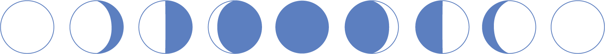

The Moon is an astronomical body that orbits planet Earth and is Earth's only permanent natural satellite. It is the 5th largest natural satelite in the Solar System.
The Moon is thought to have formed about 4.51 billion years ago, not long after Earth. The most widely accepted explanation is that the Moon formed from the debris left over after a giant impact between Earth and a Mars-sized body called Theia.
The Moon was first reached in 1959 by an unmanned spacecraft in the Soviet Union's Luna program; the United States NASA Apollo program achieved the only manned lunar mission to date, beginning with the first manned orbital mission by Apollo 9 in 1969.
The Moon is in syncronous rotation wth the Earth, and thus always shows the same side of the Earth, the near side. The near side is marked by dark volcanic maria that fill the space between the bright ancient crustal highlands and the prominent impact craters. After the Sun, the Moon is the second-brightest regularly visible celestial object in the Earth's sky. Its surface is actually dark, although compared to the night sky it appears very bright, with a reflectance just slightly higher than that of work asphalt. Its gravitational influence produces the ocean tides, body tides, and the slight lengthening of the day.
The usual English proper name for Earth's natural satellite is "the Moon", which in nonscientific texts is usually not capitalized. The noun moon is derived from Old English mōna, which originally comes from the Proto-Indo-European root *meh₁- "to measure", the month being the ancient unit of time measured by the Moon. Occasionally, the name "Luna" is used. In literature, especially science fiction, "Luna" is used to distinguish it from other moons, while in poetry, the name has been used to denote personification of our moon.
The Moon makes a complete orbit around Earth with respect to the fixed stars about once every 27.3 days (its sidereal period). However, because Earth is moving in its orbit around the Sun at the same time, it takes slightly longer for the Moon to show the same phase to Earth, which is about 29.5 days (its synodic period). Unlike most satellites of other planets, the Moon orbits closer to the ecliptic plane than to the planet's equatorial plane. The Moon's orbit is subtly perturbed by the Sun and Earth in many small, complex, and interacting ways. For example, the plane of the Moon's orbit gradually rotates once every 18.61 years, which affects other aspects of lunar motion. These follow-on effects are mathematically described by Cassini's laws.
The most obvious effects of tidal forces is to cause two bulges in the Earth's oceans, one on the side facing the Moon and the other on the side opposite. This results in elevated sea levels called ocean tides. As the Earth spins on its axis, one of the ocean bulges (high tide) is held in place "under" the Moon, while another such tide is opposite. As a result, there are two high tides, and two low tides in about 24 hours. Since the Moon is orbiting the Earth in the same direction of the Earth's rotation, the high tides occur about every 12 hours and 25 minutes; the 25 minutes is due to the Moon's time to orbit the Earth. The Sun has the same tidal effect on the Earth, but its force of attraction are only 40% that of the Moon's; the Son's and Moon's interplay is responsible for spring and neap tides.
Eclipses only occur when the Sun, Earth, and Moon are all in a straight line (termed "syzygy"). Solar eclipses occur at new moon, when the Moon is between the Sun and the Earth. In contrast, lunar eclipses occur at full moon, when Earth is between the Sun and Moon. The apparent size of the Moon is roughly the same as that of the Sun, with both being viewed at close to one-half a degree wide. The Sun is much larger than the Moon but it is the vastly greater distance that gives it the same apparent size as the much closer and much smaller Moon from the perspective of Earth. The variations in apparent size, due to the non-circular orbits, are nearly the same as well, though occurring in different cycles. This makes possible both total (with the Moon appearing larger than the Sun) and annual (with the Moon appearing smaller than the Sun) solar eclipses.